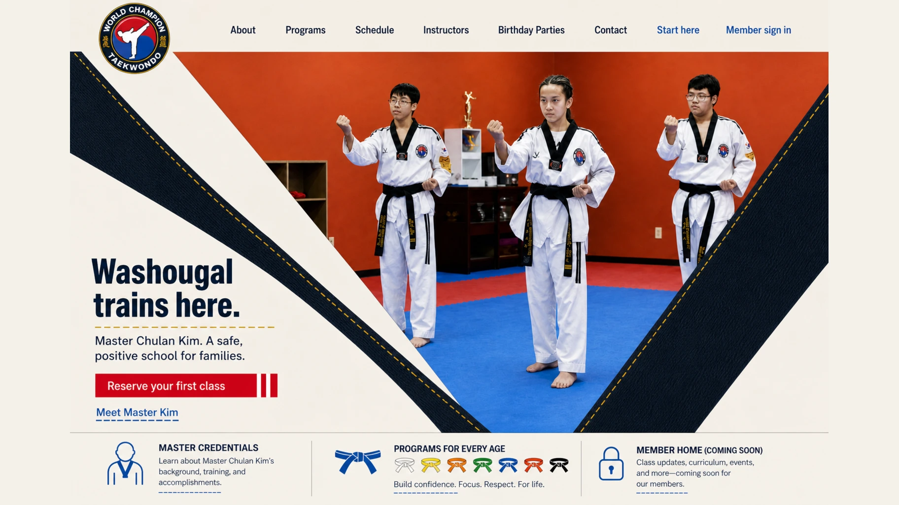
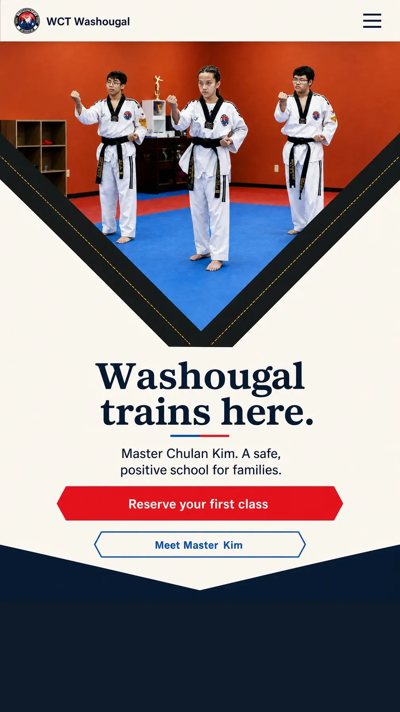

First viewportDesktop: full-bleed trio inside a drawn V that grows in from the page edges. Phone: the same V, flowing off the left and right sides of the screen.
RiskCollar can read as a decorative border if it does not actually structure the scroll.
Collar Frame
The page is a dobok V-neck: black collar tape is architecture, the three students live in the clearing, gold stitch is the only ornament.
RiskCollar can read as a decorative border if it does not actually structure the scroll.
The full read · Collar Frame
First viewportDesktop: full-bleed trio inside a drawn V that grows in from the page edges. Phone: the same V, flowing off the left and right sides of the screen.
RiskCollar can read as a decorative border if it does not actually structure the scroll.